This topic includes information about how to replace components in a dispense probe assembly for the wash wheel.
Safety Reminder
Servicing the DxI 9000 instrument involves potential risks for pinch and puncture, electrical shock, and exposure to hazardous materials. You must mitigate these risks by taking appropriate countermeasures. See
Safety for more information.
Open the right rear instrument bi-fold door to gain access to the wash wheel.
Locate the dispense probe assembly.
Figure 437:
1
D1 Dispense Probe Assembly
2
D2 Dispense Probe Assembly
3
QS Dispense Probe Assembly
Place a kimwipe or similar lint-free absorbent material beneath the tip of the dispense probe assembly.
Disconnect the click-and-seal connector for the fluidics tubing.
Caution: You may damage tubes and cables if you route them incorrectly. When you disconnect tubes and cables, be sure you will remember how to reroute and reconnect them in the same way they were connected before you disconnected them.
Disconnect the power cable for the heater.
Use the hex driver to remove the two screws that secure the dispense probe assembly to the dispense arm.
Remove the dispense probe assembly. Take care not to drip any fluid into the instrument.
Unscrew the probe tip.
For the D1 and D2 dispense probes, the probe tip is attached to the heater.
For the QS dispense probe, the probe tip is attached to the elbow.
Figure 438: D1/D2 Probe and QS Probe
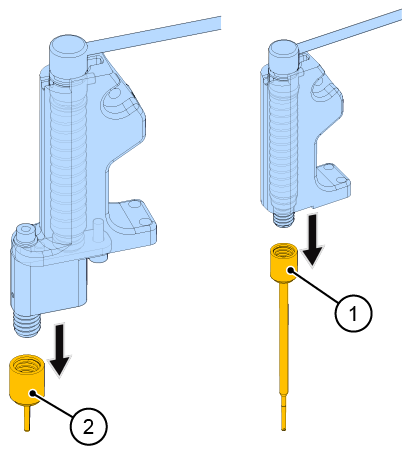
1
D1/D2 probe
2
QS probe
Note: Be sure the O-ring is present within the probe tip.
Figure 439: Probe Tip O-ring
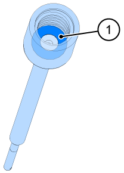
1
O-ring
For the QS dispense probe, use the hex driver to remove the two screws that secure the elbow to the bottom of the manifold. Remove the elbow.
Note: Be sure the O-ring is present inside the elbow.
Figure 440: Elbow Screws and O-ring
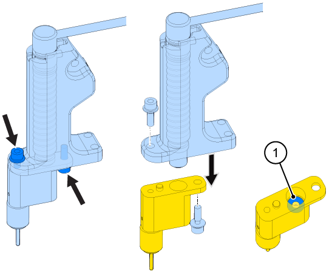
1
O-ring
Use a 2.5mm hex driver to remove the two screws that hold the wash heater top cap to the dispense probe manifold. Remove the top cap.
Figure 441:
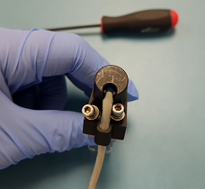
On a soft, level surface, preferably a rubber mat, push down on the manifold so that the heater core pops through the top of the manifold. Lift the heater out of the manifold.
Figure 442: Heater Assembly Removal
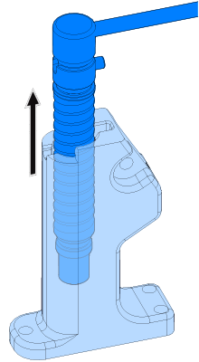
Use a pick or other tool to remove the O-rings from the heater core.
Caution: Do not scratch the heater core.
Figure 443: O-ring Removal
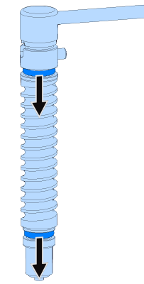
Clean the core with DI water.
Before you install new O-rings, first soak them in wash buffer to lubricate them.
Note: The new heater cores include red and white O-rings and new manifolds.
Use the conical tool to place the tube with red O-ring over the heater core.
Figure 444:
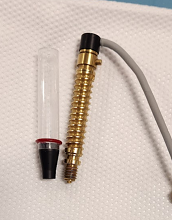
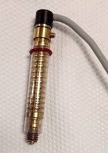
Use the red push tool to push the O-ring into the gland. Be sure the O-ring isn’t twisted. If it is twisted, replace the O-ring.
Figure 445:
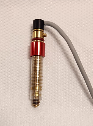
Place the conical tool with the white O-ring over the heater core.
Note: The conical tool is not needed for replacing the white O-ring on the QS dispense probe.
Figure 446:
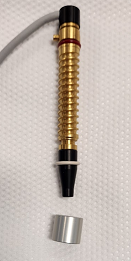
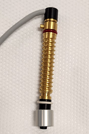
Use the silver push tool to push the O-ring onto the gland. Be sure the O-ring isn’t twisted. If it is twisted, replace the O-ring.
Fill a container with wash buffer solution.
Swab the O-rings on the heater with wash buffer solution.
Swab the inside of the manifold.
Slowly push the heater core into the manifold so that both O-rings seat properly. Use wash buffer for lubrication.
Figure 447: O-ring
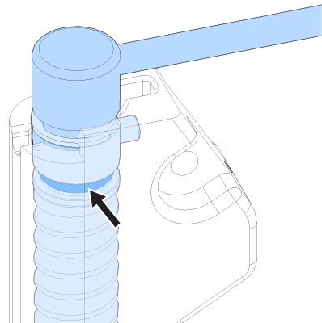
Check the O-rings for damage. If O-rings are damaged, replace them.
Use the hex driver to screw the wash heater top cap back onto the heater.
Figure 448:
For the QS dispense probe, reattach the elbow to the heater core. Be sure the O-Ring is present in the elbow.
Screw the probe tip back onto the dispense probe.
For the D1 and D2 dispense probes, the probe tip is attached to the heater.
For the QS dispense probe, the probe tip is attached to the elbow.
Note: Be sure the O-ring from manufacturer is present within the probe tip . When installing a new probe tip, be sure it is adequately tightened onto the threads to compress the O-ring within and to prevent leaks.
Figure 449: Probe Tip O-ring
1
O-ring
Use the hex driver to secure the probe assembly to the dispense arm.
Connect the power cable for the heater.
Connect the click-and-seal connector for the fluidics tubing.
Caution: You may damage tubes and cables if you route them incorrectly. When you disconnect tubes and cables, be sure you will remember how to reroute and reconnect them in the same way they were connected before you disconnected them.
Prime the wash probes, and monitor the dispense probes for leaks or bubbles Continue to prime until there are no more bubbles. See
Priming the Instrument for more information.